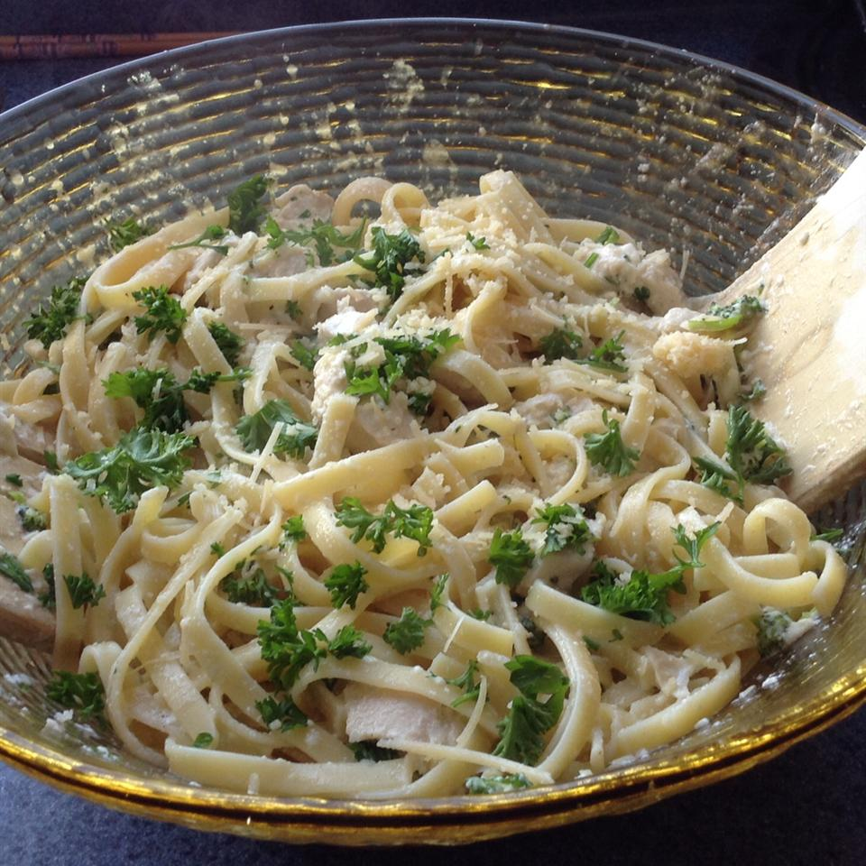

Combine chicken breasts and chicken broth in a saucepan over medium-high heat. Bring to a boil, cover, and reduce heat to low; simmer for 5 minutes. Turn breasts, cover, and simmer another 5 minutes. Remove from heat and let sit with the cover on for 15 minutes.
Remove chicken breasts from the broth and set aside to cool, reserving the broth in the saucepan. Once the chicken is cool enough to handle, cut into bite-size slices.
Return the chicken broth to medium heat and cook until reduced to 1 cup.
Stir garlic, black pepper, and heavy cream into the reduced broth; bring to a simmer and remove from heat.
Whisk egg yolks in a bowl until smooth. Beat 1 tablespoon of the warm cream mixture into the eggs until thoroughly incorporated; repeat until about 1/2 cup of the warm cream mixture is used.
Whisk the warm cream and egg mixture back into the saucepan with the remaining cream mixture. Cook over medium-low heat, whisking constantly , until the mixture almost comes to a simmer and thickens, about 5 minutes. Season with salt and black pepper to taste.
Bring a large pot of lightly salted water to a boil. Cook fettuccine in boiling water, stirring occasionally, until nearly cooked through, about 7 minutes. Drain.
Stir parsley, 1 cup of Parmigiano-Reggiano, and cream mixture into the pasta. Remove from heat, cover, and let sit for a few minutes until thick.
Fold chicken and 1 cup Parmigiano-Reggiano into the pasta mixture to serve.